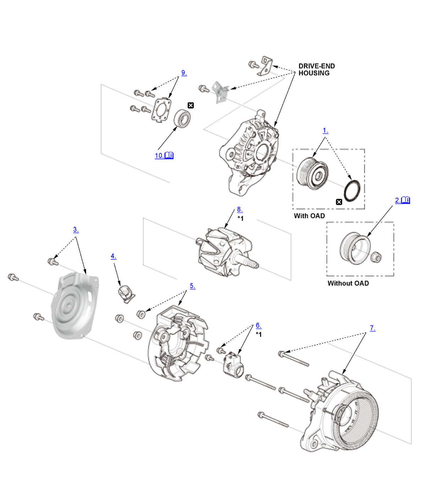

Alternator Overhaul (K20C2): Disassembly: Procedure
NOTE:
Numbered call-outs in figure pertain to list numbers in following procedure.

Courtesy of HONDA, U.S.A., INC. |
Detailed information, notes, and precautions |
 |
Replace |
| *1 | These parts have inspection items. |
- OAD Pulley - Remove (With OAD)
- Pulley - Remove (Without OAD)
1. Remove the pulley locknut with a 10 mm wrench (A) and a 22 mm wrench (B). If necessary, use an impact wrench. - Heat Shield - Remove
- Terminal Insulator - Remove
- End Cover - Remove
- Brush Holder Assembly - Remove
- Stator Assembly - Remove
- Rotor - Remove
- Front Bearing Retainer - Remove
- Front Bearing - Remove
1. Drive out the front bearing with a brass drift and a hammer.